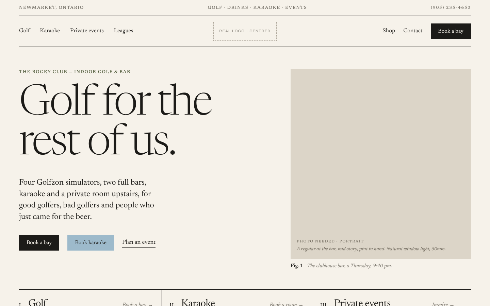
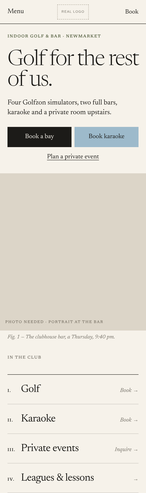

The club as a beautifully printed journal: one serif family, figure captions, a numbered contents list, generous margins, closer to a golf apparel lookbook than a venue website.


Newsreader (optical sizes 6–72), one serif family with small-caps labels. Free (OFL).
Paper, ink and a pale Sunday-sky blue: closer to golf apparel than to a sports venue. It is distinctive but quieter, and the least nightlife-like of the three.
Portraits of regulars and staff in natural window light, with captions that tell small true stories.